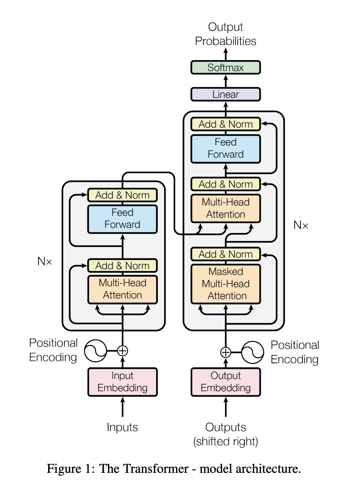

And why did you spend all that time talking about perceptrons?
-
The blue Feed Forward blocks in the diagram are MLPs
(for the sake of terminology, note that all MLPs are FFNs, but
not all FFNs are MLPs).
-
GPT-3 contained 96 transformer decoders (the left half of the
figure).
- Each decoder has an MLP as just one of its components.
-
The attention layers also contain many parameters (you'll have to
go read the paper for more detail!)
-
For GPT-3, this works out to 175 billion parameters that need to
be optimized during training!
What started off as a room-sized machine (the Mark I) is now just
one of hundreds of the components of an LLM!

https://arxiv.org/pdf/1706.03762